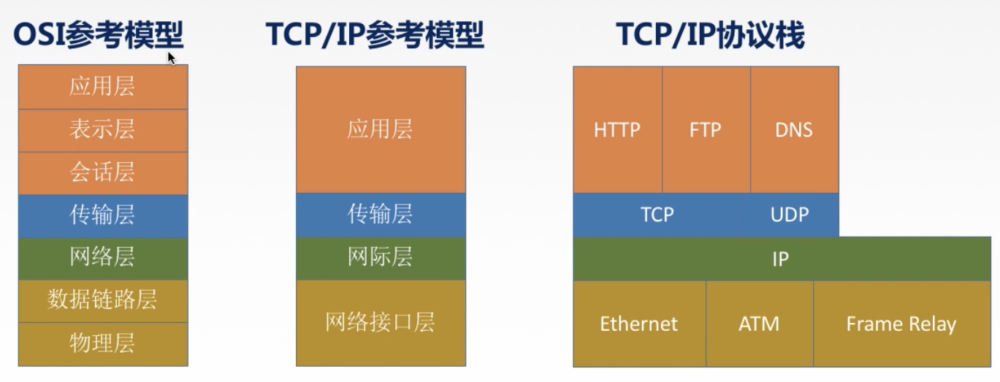
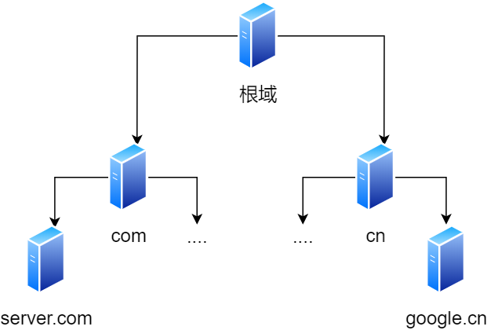
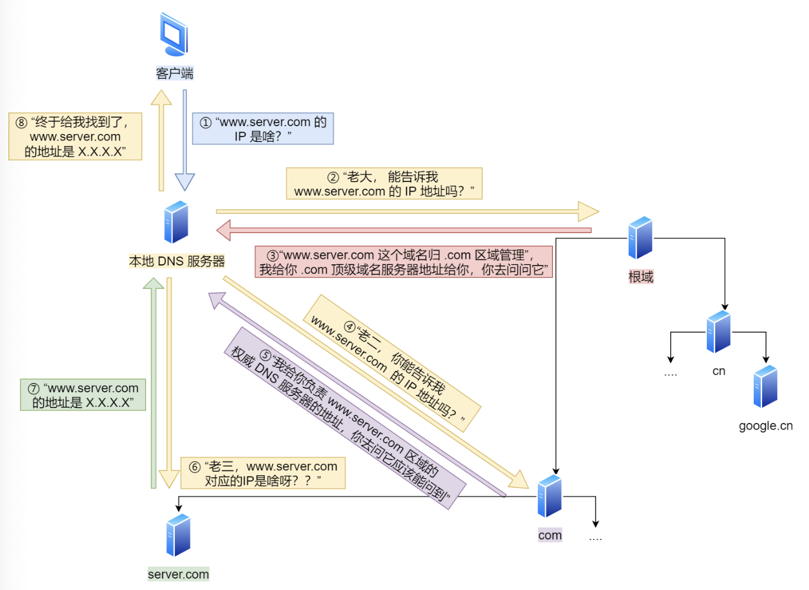
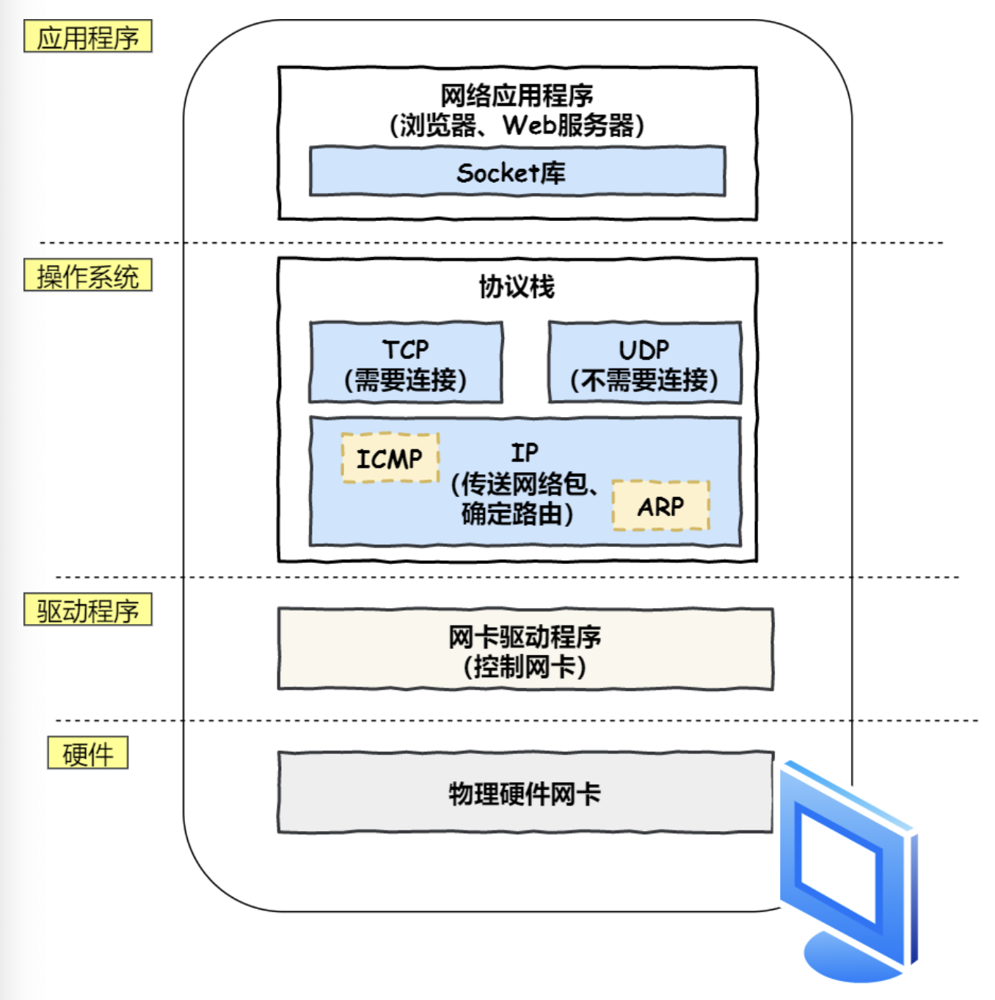
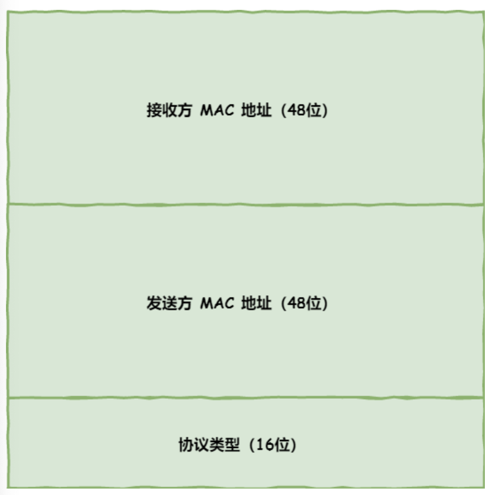
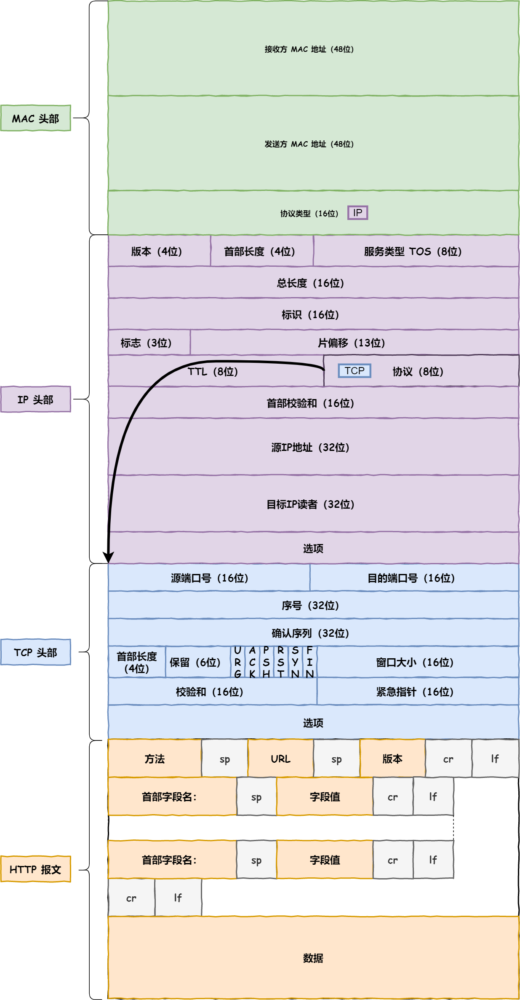
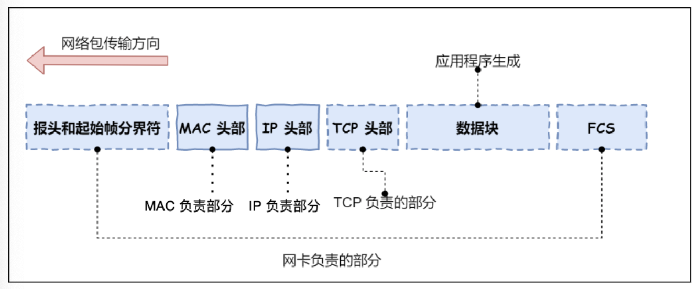
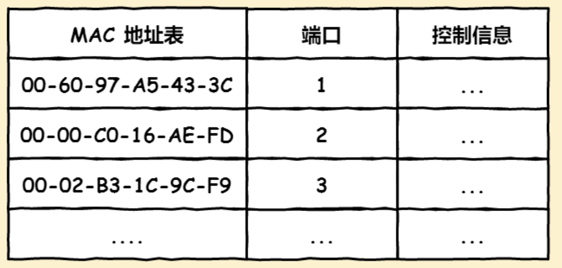
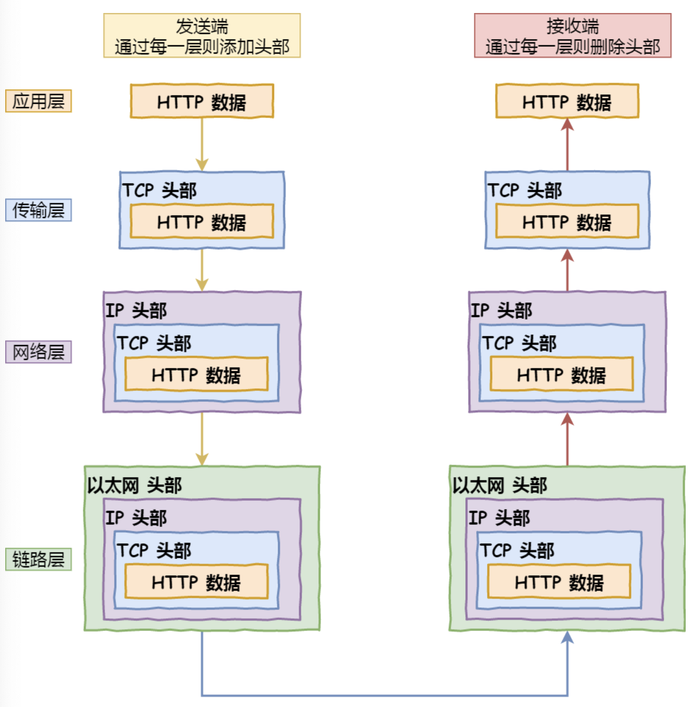

1 TCP/IP 网络分层模型
计算机网络体系结构是计算机网络的各层及其协议的集合。
分层结构的构成：
- 实体：第n层中的活动元素称为n层实体。同一层实体叫对等实体（平行方向）。
- 协议：为进行网络中的对等实体数据交换而建立的规则、标准或约定。
- 接口（访问服务点SAP）：上层使用下层服务的入口。
- 服务：下层为相邻上层（垂直方向）提供的功能调用。

1.1 应用层
应用层（Application Layer）是TCP/IP模型的最上层，也是我们能接触到的一层。应用层专注于为用户提供应用功能，我们日常在电脑或手机上使用的应用软件都在这一层实现，比如HTTP，FTP，SMTP，DNS，Telnet。
应用层不关心数据的传输，两个设备需要通信时，应用层把应用数据传给下一层——传输层来进行传输。
应用层工作在操作系统中的用户态，传输层及以下工作在内核态。
1.2 传输层
传输层（Transport Layer）为应用层提供网络支持，负责主机中两个进程的通信，即端到端通信，传输单位是报文段（segment）或用户数据报（user datagram）。
传输层有两个重要协议——TCP和UDP。传输控制协议TCP（Transmission Control Protocol）是面向连接的可靠传输协议，还拥有流量控制、拥塞控制、超时重传等多种特性。用户数据报协议UDP（User Datagram Protocol）是无连接、不可靠的传输协议，只负责发送数据包，不保证数据包是否到达，但是这也让它的实时性更好，传输效率更高。
分段（segment）：应用需要传输的数据可能非常大，直接一次传输不好控制，一旦传输失败重传的消耗也很大，因此当传输层的数据包大小超过MSS（Maximum Segment Size）时数据包会被分为一个一个segment传输。
端口（port）：一台设备上会有很多设备同时在传输或接收数据，因此端口号被用来表示和区分网络中的不同应用，端口号的范围是0到65535，比如Web服务器常用的端口80，Telnet使用的端口22。对浏览器来说每个标签栏都可以表示一个独立的进程，系统会为这些进程分配临时的端口号。
1.3 网络层
网络层（Internet Layer）负责把分组从源端传到目的端，即把数据包从一个设备实际传输到另一个设备，中间会经过各种设备和线路。这可以使得传输层保持简单高效，专注于为应用层提供服务而不用负责数据在网络中的实际传输。
网络层最常使用的协议是IP（Internet Protocol），IP协议会将传输层的报文段作为数据部分，再加上IP协议的头部组装成IP数据报（IP Datagram）。
类似于传输层的分段，如果IP报文大小超过MTU（Maximum Transmission Unit，以太网中一般为1500字节）就会再次进行分片（Fragmentation），得到一个个被发送到网络中的IP报文。
寻址和IP地址：网络世界中各种各样的设备都需要一个编号，也就是IP地址。IPv4协议的地址有32位，用每段8位的点分十进制来表示，为了更好地分配，IPv4的地址由网络号和主机号组成，配合子网掩码或CIDR表示进行按位与运算来推算。
路由：两台网络中的设备可能经过了很多网关、路由器、交换机，从而形成很多条网络的路径，当IP数据包到达一个节点，需要通过特定的路由算法来决定接下来的路怎么走。
简而言之，寻址的作用是告诉数据包下一步的目的地在哪儿，路由则是确定一条到目的地的路径，
1.4 网路接口层
网络接口层（Link Layer）将IP数据包添加MAC头部，封装成帧（Data frame），然后发送到物理媒体的链路上进行传输，另一端，网络接口层将数据帧接收、去除报头并且将接收到的包传到网络层。
这一层上的最普遍应用是以太网，以太网是一种基于IEEE 802.3制定的局域网技术，规定了介质访问控制（Media Access Control）、连线、电子信号等内容。以太网通过MAC地址来进行寻址，而MAC地址可以通过ARP协议获取。
简而言之，网络接口层主要为网络层提供“链路级别”的服务，工作在网卡这个层次，负责在以太网、WiFi这样的底层网络上发送数据。
1.5 和OSI7层模型的比较
OSI由ISO于1984年提出，理论很成功，市场很失败。

主要多了两层：
- 表示层：用于处理两个通信系统中交换信息的表示方式。主要功能有数据格式变换、数据加密解密、数据压缩和恢复。
- 会话层：向表示层的实体/用户进程提供建立连接并在连接上有序地传输数据，这个过程称为会话或建立同步（SYN）。主要功能有建立、管理、终止会话，使用校验点使会话在通信失效时从这个点继续恢复通信，实现数据同步，比如传输大文件。
2 键入网址到网页显示的过程
2.1 HTTP
键入网址后，浏览器做的第一步工作是解析URL（Uniform Resource Locator ）。
http://www.example.com:80/path/to/myfile.html?key1=value1&key2=value2#anchorhttp://- 协议（scheme）：表示浏览器请求服务器资源的方法，浏览器默认的一般是HTTP协议，URL省略协议部分时默认以HTTP来访问。还有其他的协议比如https://，mailto:，ftp:等。www.example.com- 域名（Domain）或主机名（Host）：表明了请求资源所在服务器的网站域名或IP地址。:80- 端口（Port）：如前文所提到的，一台主机上可能存在多个服务器在提供服务，因此需要标明端口号来区分不同的服务。比如80代表Web服务，22代表Telnet服务。/path/to/myfile.html- 请求或文件路径（Path）：标明请求在服务器上具体的位置，但这并不一定要是真实存在文件的物理地址，也可能是表示请求服务的虚拟位置，这由服务器来决定。省略的时候请求的就是默认文件了，一般是/index.html之类的。?key1=value1&key2=value2- 请求参数（Parameter）：一般使用Get请求时，请求参数会以字符串形式拼接在URL的末尾。#anchor- 锚点（Anchor）：滚动到当前网页的某一个位置。
解析完URL之后，浏览器确定了要发起的访问协议、Web服务器位置和具体请求路径，接下来会根据这些信息生成HTTP请求消息。
2.2 DNS
浏览器解析URL生成HTTP请求message之后，就可以委托操作系统把消息发给Web服务器了。但是在域名部分是一串很“实际”的文字，如何通过它找到Web服务器的位置呢？
这时就需要查询服务器域名对应的IP地址，因为操作系统是不认识域名的，它需要IP地址来确定消息的目的地。域名系统DNS（Domain Name System）可以理解为通讯录，一个服务器的IP地址是保存在DNS的电话号码，域名是我们给它备注的名称。
DNS中的域名用点号分割，比如www.server.com，点号代表的是不同层次的界限，越靠右代表层级越高（西方人写地址的时候也习惯于从小到大的顺序写）。实际上，在每个域名的最右边还有一个点号代表根域名：www.server.com.。

层级关系是：
.：根DNS服务器.com：顶级域DNS服务器server.com：权威DNS服务器
根域DNS服务器的信息保存在所有DNS服务器中，任何DNS服务器都可以找到并访问根域DNS服务器，因此客户端在解析域名时先找到任意一台DNS服务器，然后找到根域DNS服务器，然后就可以一路向下找到目标DNS服务器了。
域名解析的工作流程：
- 客户端发送DNS请求到本地DNS服务器（TCP/IP设置时填写的DNS服务器地址）问
www.server.com的IP。 - 本地DNS服务器收到请求后，去缓存表格里找该域名：如果找到直接返回IP地址；如果没找到则去问它的根域名服务器。根域名服务器是最高层次的DNS服务器，它不用与域名解析，但是能指明寻找道路。
- 根DNS服务器收到请求后，发现后置是
.com，于是返回.com顶级域名服务器地址给本地DNS服务器。 - 本地DNS服务器又继续向顶级域名服务器发送请求，然后收到回复被告知它的权威DNS服务器地址。
- 本地DNS服务器再向权威DNS服务器发送请求，权威DNS查询到该域名的IP地址后返回给本地DNS服务器，本地DNS服务器又返回给客户端，客户端从而可以和目标建立连接。

问题：每次解析域名都要经历这么多请求步骤吗？
- 不是。
- 浏览器会首先查看自身对于这个域名和IP的映射关系有没有本地及缓存，如果有缓存会直接返回；如果没有又会去问操作系统，操作系统查看自己的缓存，如果有就返回；如果还没有就去hosts文件找，还是没有才去问本地DNS服务器。
2.3 操作系统协议栈
DNS获取到IP后，HTTP的传输工作将被交给操作系统中的协议栈。

协议栈分为三个部分：
- 应用程序和接收应用层委托负责收发数据的TCP/UDP。
- 控制网络包收发的IP协议（包括ICMP和ARP）。
- 负责控制网卡硬件的网卡驱动程序和实际完成收发操作的物理网卡。
2.4 TCP
HTTP是基于TCP协议传输，对于TCP的协议后续会再进行详细学习，对于传输HTTP应用数据，TCP的主要工作有：
- 三次握手建立连接。
- TCP分割数据。
- 加上TCP头部，报文生成。
2.5 IP
TCP模块在执行连接、收发、断开等阶段操作时，需要委托IP协议将数据加上IP头部封装成网络包（IP数据报）发送给通信对象，后续会详细学习IP协议。
2.6 MAC
IP协议封装过后数据报还需要加上MAC头部，以封装成帧，在数据链路层（网络接口层）进行传输。
以太网技术中使用的就是MAC头部，包含了接收方和发送方的MAC地址等信息。

目的MAC地址和源MAC地址用来保证两点之间的传输，在TCP/IP的通信中，MAC头部的协议类型一般只使用：
0800:IP协议。0806：ARP协议。
源MAC地址的获取：MAC地址是网卡生产时就写入了ROM里的，写入MAC头部时直接把这个值读取出来就行。
目的MAC地址的获取：
- 先查询ARP缓存，如果缓存中已经保存了对方的MAC地址就直接使用该地址。
- 如果缓存中不存在，需要发送ARP广播查询。ARP广播查询会通过IP地址在以太网中以广播（全F的目的MAC）形式询问所有设备直到得到该IP地址设备的回复，回复会带上目的设备的MAC地址，然后就可以填入MAC头部了，本次查询结果也会放进ARP缓存。
至此，网络包的报文结构：

2.7 网卡
网络包的实质还是一堆二进制的数字信息，但是在网线中传输的是电信号，因此还需要进行数模转换，负责这一操作的是网卡，网卡的功能收到网卡驱动程序的控制。
网卡驱动收到网络包之后，将其复制到网卡内的缓存区中，然后在其开头加上报头和起始帧的分界符（用来表示包起始位置的标记），末尾加上用于检测错误的帧校验序列FCS（检查包传输过程是否有损坏）。

最后网卡将包转换为电信号，通过网线发送出去。
2.8 交换机
交换机的工作思路是将网络包原样转发到目的地，工作在MAC层，也被称为二层网络设备。
首先，电信号到达网线接口，交换机的模块进行接收，然后将电信号转换为数组信号，通过包末尾的FCS校验错误，如果没问题就放到缓冲区。
交换机的计算机网卡的区别：
- 网卡本身具有MAC地址，并通过核对接收到的包信息中的目的MAC地址判断是不是发给自己的，如果不是就丢弃；交换机的端口不具备MAC地址，也就无法核对接收方的MAC地址，而是直接接收所有的包并放到缓冲区。
接下来，交换机要核对这个包的目的MAC地址和自己的MAC地址到端口的映射表，从而将这个包从相应的端口发出去，这个表的信息包括：
- 设备的MAC地址；
- 该设备在交换机的哪个端口上。

在以太网中，这个表是自学习的：
- 当包到达交换机时，如果源MAC地址在映射表中不存在，交换机会将这个包的源MAC地址和到达端口作为一对映射放入表中；
- 当表中找不到目的MAC地址时，交换机将这个包转发到除了源端口外的所有端口，因为网卡会进行核对，因此只有真正的接收者会接收到这个包，其他的设备会直接丢弃这个包，接收者随即作出响应，交换机就能把它的MAC地址和来源端口信息填入表中了。
2.9 路由器
网络包经过交换机之后，还可能会经过路由器，交换机和路由器的主要区别有：
- 交换机工作在数据链路层（OSI的二层），也称为二层网络设备；路由器工作在网络层（OSI的三层），也称为三层网络设备。
- 交换机的端口没有MAC地址；路由器的端口不仅有MAC地址还有IP地址。
- 交换机用于组建局域网；路由器把交换机组成的局域网连接起来，或者接入Internet。
- 交换机实现的是特定网络内部的数据交换；路由器实现了不同网络的数据转发。
- 交换机的交换数据基于MAC地址；路由器的数据转发基于IP地址。
路由器工作的基本原理：
- 路由器的端口具有MAC地址，因此它能够成为以太网的发送方和接收方，同时还具有IP地址，可以认为它的每个端口和计算机的网卡是等价的。
- 转发包时，路由器端口会接收发给该端口的以太网包，电信号到达网线接口后，路由器的模块会进行模数转换，然后通过包末尾的FCS进行错误校验，如果没问题再检查MAC头部的目的MAC地址，确认是不是发给自己的包，如果是就放入缓冲区，否则就丢弃。
- 接收完包后，路由器会去掉包开头的MAC头部，根据IP头部通过路由表查询转发目标确定输出端口：如果该路由表项的网关字段为空，说明IP头部中的目的IP地址就是目的地，已达终点；如果网关字段是一个IP地址，说明还未抵达终点，该地址就是要转发到的目的地址，通过ARP协议查到该IP地址对应MAC地址，重新添加MAC头部封装，再由相应的端口作为发送方将包发送出去。经过层层这样的转发最终该包会到达目的地。
由路由器工作原理可知，在网络包的传输过程中，源IP和目的IP是始终不变的，一直变化的是被拆封和重新封装的MAC地址。过程可参考计算机网络笔记Part4 网络层：ARP协议。
2.10 封装与解封装
经常有人说所谓的计算机网络科学就是套娃的科学，在发送端会进行层层的封装，到达接收段则会将这些封装再层层去除。

- 数据包到达服务器后，MAC头部最先被解开，查看是否是服务器自己的MAC地址，符合就把包收入囊中。
- 继续扒开IP头部，查看IP地址是否符合，并根据头部中的协议项，确定上层是TCP协议。
- 然后扒TCP协议的头，里面有序列号，确定序列号是不是我所期待的序列号，如果是就放入缓存并返回ACK，不是就丢弃。
- TCP头部中还有端口号80，HTTP服务器正在监听这个端口号，于是确定是HTTP进程想要这个包，这个包就被发送给HTTP进程。
- HTTP进程看到这个请求是要访问一个页面，于是把这个请求页面的内容以HTML的形式封装在HTTP响应报文中，响应报文再次被加上TCP、IP、MAC头部，穿好衣服后再次被发送回客户端。
原著：小林coding图解网络